VR4WAM: Exploring Visual Representations for World–Action Models
1HKUST2Nanjing University 3University of Nottingham4Robbyant, Ant Group
*Corresponding author
Most world–action models act on the latent space of the video generator they are initialized from: a reconstruction latent, from which the image can be redrawn. Is it a good state for a model trained from scratch, or do the features of pretrained representation encoders serve it better? We train the same world–action model from scratch on six visual spaces and on pairs of them, change nothing but the visual state, and evaluate every configuration in and out of domain. §2 Setup ↓
What we find
- S1The loss does not measure generalization. The action loss on held-out robot data tracks in-domain success (r = −0.80) more closely than out-of-domain success (r = −0.53), so we judge generalization out of domain. §3 ↓
- S2Represent, don't reconstruct. Representation latents make a better state than reconstruction latents, most of all out of domain: in randomized RoboTwin scenes, the two reconstruction latents succeed in 1% of episodes, the four representation latents in 6% to 22%. §4 ↓
- S3Align to a second space. A second space helps as a training target rather than as an input. Aligning couplings improve on both spaces out of domain with every second space; input couplings follow the second space and inherit a weak one's failures. §5 ↓
- S4Scale the recipe. Pretrained on about 24,000 hours of robot data, a representation latent aligned to a second space by Feature Forcing outperforms either space alone, achieves state-of-the-art results on RoboTwin, RoboCasa, and RoboDojo, and outperforms π0.5 on a real robot. §6 ↓
A world–action model should act on a representation latent, and add a second space as a training target, not as an input.
§2What changes, and what stays fixed?
Only the visual state changes
Each training sample, a window, holds the current frame, two blocks of four future frames, and the 32-step action chunk over the same span. A frozen encoder turns the frames into states. A world Transformer learns to denoise the future states, and an action expert, which reads the world Transformer at every layer, learns to denoise the actions. At inference the future positions hold pure noise: the world Transformer runs once, and the action expert denoises the action chunk in ten steps, without decoding any image.
Hover a part to see what it does. The encoder is frozen; the world Transformer (30 layers, about 5.0B parameters) and the action expert (30 layers, about 1.0B) are trained from scratch.
Every configuration shares this architecture, the training data, the number of training steps, and the action objective. Only the encoder changes, and, for a pair of spaces, how the model uses the second one. We compare two reconstruction latents with four representation latents.
Every policy is evaluated in closed loop, in and out of domain. RoboTwin 2.0 policies train on clean scenes and are tested in clean and in domain-randomized scenes, 100 episodes for each of 50 tasks. LIBERO policies are tested on the original tasks and on the 10,030 tasks of LIBERO-Plus, which changes one factor at a time.
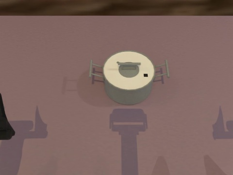
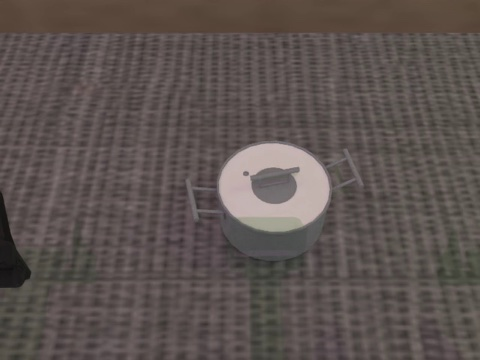
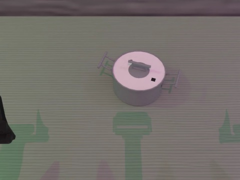
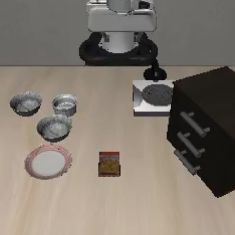
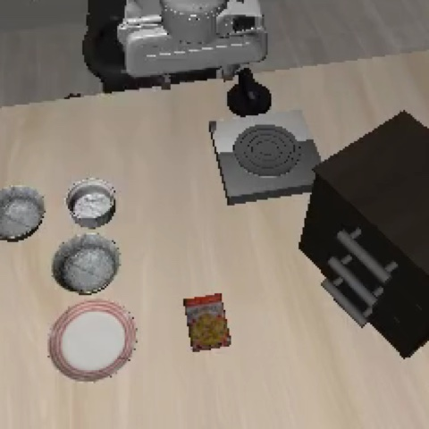
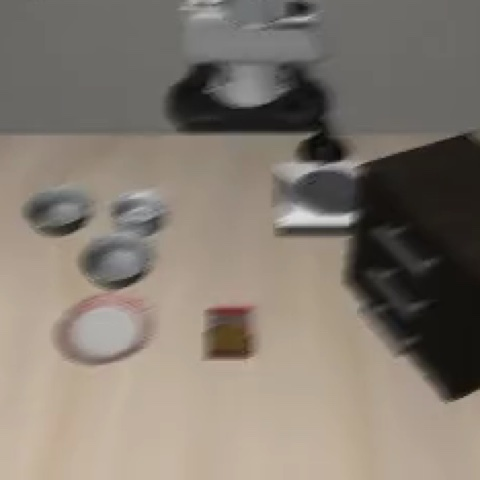
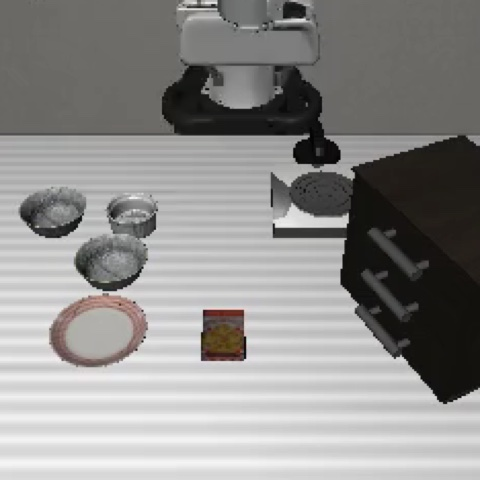
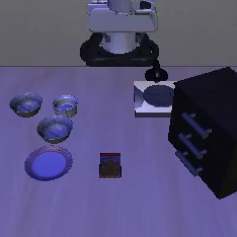
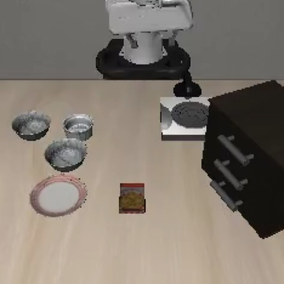
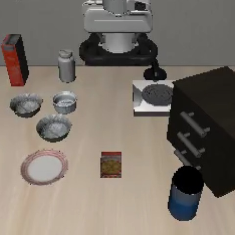
§3Does the training loss tell how well a policy generalizes?
The loss mainly tracks in-domain success
Closed-loop success is our main measure, but it needs rollouts and is measured only at the end of training. To compare how fast spaces learn, every configuration is also trained on about 850 hours of real-robot data from AgiBot World, and we compute its action flow-matching loss on held-out trajectories, the pretraining action loss. How much does this loss say about success?
Filled: a space alone; open: two spaces coupled without alignment, colored by the primary space. Line: least-squares fit. Switching from clean to randomized scenes, the points spread out and the correlation weakens.
Across six spaces alone and 15 couplings that train without alignment, the loss correlates strongly with in-domain success and more weakly with out-of-domain success. FLUX.2 AE and SigLIP 2 differ by only 1% in loss, yet succeed in 1% and 16% of randomized episodes. The loss is computed on held-out trajectories from the training distribution, so like in-domain success it reflects how well a policy fits that distribution, not how robust it is to a shift.
§4Which visual space makes a better state?
Representation latents, most of all out of domain
In clean RoboTwin scenes, the four representation latents succeed in 79.7% to 84.3% of episodes, the two reconstruction latents in 72.0% and 76.6%. Under domain randomization the two groups split apart: the reconstruction latents fall to 1%, while the representation latents keep 6% to 22%.
Each line runs from a space's in-domain success to its out-of-domain success. RoboTwin 2.0: clean, then randomized scenes. LIBERO: the original tasks, then LIBERO-Plus.
Where the gap comes from
LIBERO-Plus changes one factor at a time. The gap is largest under changes of background, lighting, and sensor noise, and smaller under changes of camera viewpoint, object layout, and language; under changes of the robot's initial state, Wan VAE succeeds more often than every representation latent. To redraw the image, a reconstruction latent must encode background, lighting, and noise, so changes in these factors alter its state even though the task is unchanged.
Squares: reconstruction latents; circles: representation latents. Hover a row to compare the six spaces under one perturbation.
Most representation latents also learn faster: V-JEPA 2.1 reaches the loss that Wan VAE has after 40,000 steps in 27,600 steps, 1.45 times as fast. We build on V-JEPA 2.1 from here on. It learns fastest, succeeds most often in clean scenes, and second most often in randomized scenes, behind VGGT-Ω, whose encoder slows each policy call from 427 to 550 ms.
§5How should a second space enter the model?
As a training target, not as an input
No single space is best everywhere: V-JEPA 2.1 trails other spaces when the background or the camera viewpoint changes, and even Wan VAE beats it when the robot's initial state changes. We therefore couple V-JEPA 2.1 with a second space B. The five couplings fall into two families: aligning couplings use B only as a training target, input couplings also read it.
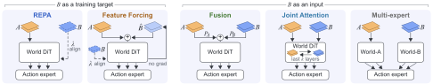
How the model of the primary space A uses the second space B in each coupling (dashed: training only).
| Coupling | What it does | B as a target | B as an input | B's encoder at inference | Training compute per step |
|---|
Each coupling has one hyperparameter, tuned once on Wan VAE with DINOv3 and reused for every pair. Training compute is relative to a single space, without the frozen encoders.
In domain, the couplings differ little: every one succeeds in 82.4% to 87.4% of episodes, within about three points of V-JEPA 2.1 alone. Out of domain, the two families separate.
Success in randomized RoboTwin scenes of V-JEPA 2.1 coupled with each second space, against the success of that space alone. Lines: the mean of each family; faint dots: the single couplings, named on hover.
With every second space, REPA and Feature Forcing succeed in 25.4% to 35.8% of randomized episodes, above V-JEPA 2.1 alone (20.5%), even with Wan VAE, which alone succeeds in 1.0%. The input couplings read B at inference, so their success rises and falls with that of B: with Wan VAE, Fusion and Joint Attention fall to 2.4% and 4.1%. Paired with itself, V-JEPA 2.1 gains 10.6 points under Feature Forcing, so predicting a space and conditioning on the prediction helps on its own, and a different second space adds 1.9 to 4.7 points more.
LIBERO-Plus shows that the aligned model attains the strengths of both spaces. Aligned to Wan VAE by Feature Forcing, V-JEPA 2.1 exceeds both spaces in all seven categories: under background changes, where it is weak alone (67.0% against 41.6%), and under initial-state changes, where Wan VAE is the stronger space (57.7% against 48.4%).
We recommend Feature Forcing. It succeeds most often out of domain in every pair and runs only the primary encoder at inference, for a third more training compute and one extra forward pass of the world Transformer. REPA adds almost no compute and suits a tighter budget.
§6Does the recipe hold at scale?
After 24,000 hours of pretraining, it still leads
We pretrain three models on about 24,000 hours of bimanual manipulation from ten dual-arm embodiments, mostly teleoperated on real robots: Wan VAE, V-JEPA 2.1, and V-JEPA 2.1 aligned to Wan VAE by Feature Forcing. They share the architecture, are trained from scratch for 300,000 steps, and are then fine-tuned on each benchmark; none of the benchmarks is in the pretraining data.
The coupled model succeeds most often of the three on every benchmark. Among published policies, it achieves state-of-the-art results on RoboTwin 2.0, RoboCasa, and RoboDojo, and comes within two points of the best policy on LIBERO-Plus and LIBERO-PRO.
Published policies as reported by PrismWAM and as collected by SLA.
On a real robot
On a dual-arm Franka robot whose embodiment is absent from pretraining, each model is fine-tuned on 46 and 50 teleoperated demonstrations of two tasks. From new initial positions, the coupled model inserts the test tube in 7 of 10 trials, against 2 of 10 for π0.5 fine-tuned from its released weights on the same demonstrations.
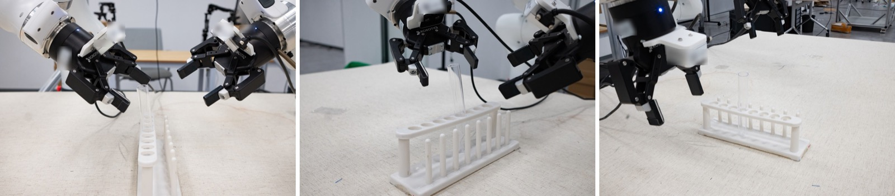
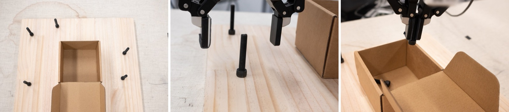
Common questions
FAQ
Why train every model from scratch?
A model initialized from a video generator starts in that generator's latent space, which favors the generator's own latents: initializing from Wan weights lowers the pretraining action loss of Wan VAE by 8.3%. Training every configuration from scratch compares the spaces themselves.
Why project the representation features to 32 channels?
A frozen PCA needs no training, while a learned compressor adds its own design and training choices and may compress some encoders better than others. In our pilots, PCA performs as well as a learned 32-channel S-VAE. The reconstruction latents keep their native form.
Why not compare the spaces by the loss?
The loss mainly tracks in-domain success (§3). Two spaces can differ by 1% in loss and by 15 points in out-of-domain success, so generalization is judged in closed loop, out of domain.
Why V-JEPA 2.1 as the primary space?
It learns fastest, succeeds most often in clean RoboTwin scenes, and second most often in randomized ones. VGGT-Ω, which leads there, makes every policy call slower (550 against 427 ms).
What does Feature Forcing cost?
A third more training compute per step and, at inference, one extra forward pass of the world Transformer to predict the second space. The second space's encoder never runs at inference.
Thanks
Acknowledgements
We thank Shangzhan Zhang, Siqiao Huang, Yihang Chen, Jian Gao, Yibin Yan, Jiaqi Liao, Weiyang Jin, Baiqiao Yin, Yinchen Tian, Yuran Wang, Weili Xu, Zehong Shen, Feiyang Liu, and Qinlei Xie for helpful discussions and feedback.
Citation
BibTeX
@article{dong2026exploring,
title = {VR4WAM: Exploring Visual Representations for World--Action Models},
author = {Dong, Jiacheng and Chen, Lin-Zhuo and Xu, Fangyi and Zhang, Jiayi and Zheng, Kecheng and Xu, Yinghao},
journal = {arXiv preprint},
year = {2026}
}